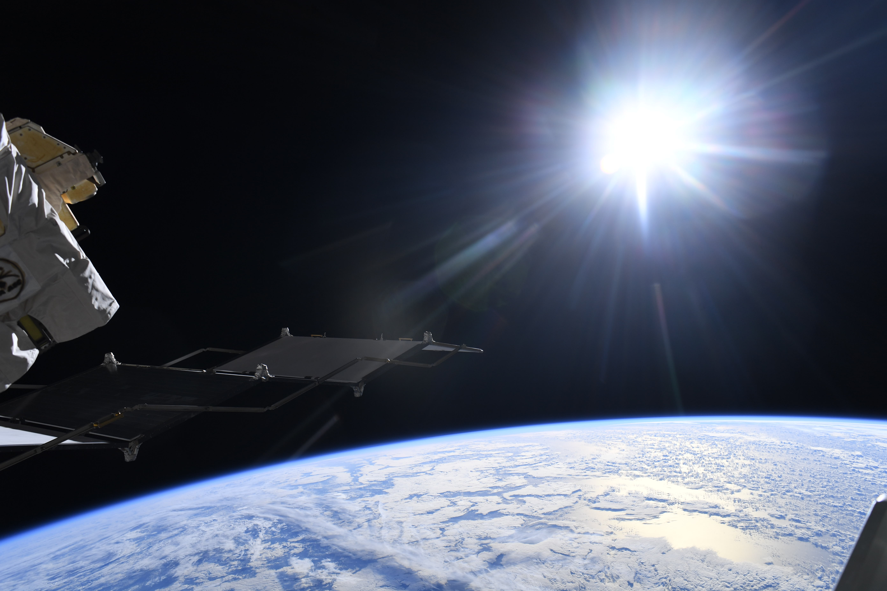
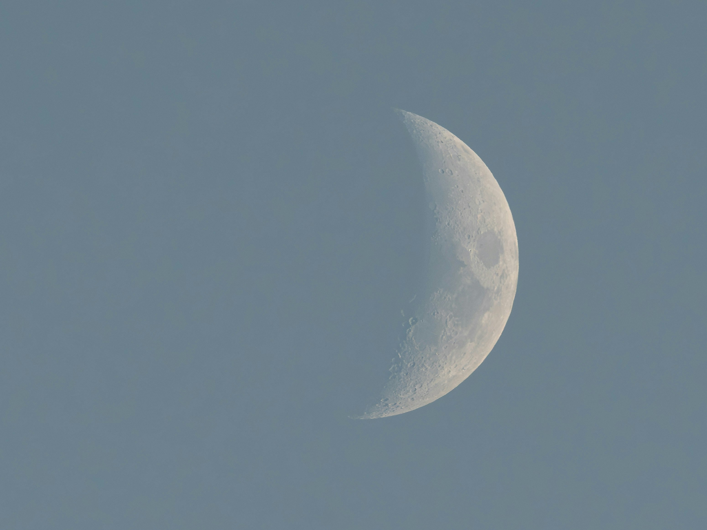
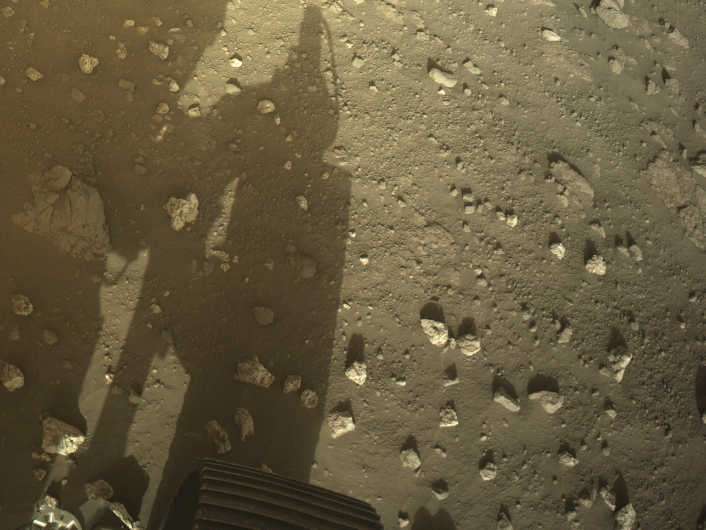

Запуск #1
Совершите незабываемый полёт на низкую орбиту Земли. Вы увидите планету с высоты 400 километров и почувствуете невесомость на борту нашего корабля.

Совершите незабываемый полёт на низкую орбиту Земли. Вы увидите планету с высоты 400 километров и почувствуете невесомость на борту нашего корабля.

Программа «Лунный тур» включает облёт Луны и выход на окололунную орбиту. Вы сможете увидеть обратную сторону спутника и сделать уникальные снимки.

Исследовательская миссия на Марс. Вместе с нашей командой вы примете участие в научных экспериментах и поможете собрать данные для будущих экспедиций.
| # | Тур | Описание | Цена |
|---|---|---|---|
| 1 | Орбитальный полёт | Полёт вокруг Земли на высоте 400 км. Продолжительность — 3 дня. Включает невесомость, панорамный обзор и фотосессию в открытом космосе. | 25 000 000 руб. |
| 2 | Лунный тур | Облёт Луны с выходом на орбиту. Продолжительность — 7 дней. Вы увидите обратную сторону спутника и место посадки «Аполлона-11». | 50 000 000 руб. |
| 3 | Марсианская миссия | Полёт к Марсу с высадкой на поверхность. Продолжительность — 2 года. Включает участие в научных экспериментах и сбор образцов грунта. | 120 000 000 руб. |
| 4 | Суборбитальный прыжок | Кратковременный полёт (15 минут) с выходом за линию Кармана. Вы почувствуете невесомость и увидите кривизну Земли. | 8 000 000 руб. |